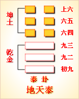
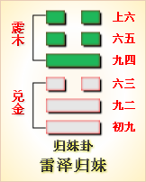
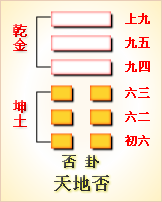

高岛易断 - 26山天大畜
高岛易断 26 山天大畜
“大畜”为卦，下《乾》上《艮》，《乾》，健也，《艮》，止也，畜亦止也。大对小而言：《小畜》《巽》在《乾》上，五阳一阴，以一阴畜《乾》三阳，《巽》体柔顺，其力不固，故为《小畜》；《大畜》二阴四阳，《艮》体笃实，能厚其储，故为《大畜》。《杂卦传》曰，"大畜时也"，《大畜》以《艮》畜《乾》者也，《乾》之纯阳，进而不止，而《大畜》能畜之，若不欲其进者，时未可也。不惟其止，惟其动，健而又动，《无妄》所以为灾也；不惟其动，惟其止，健而能止，《大畜》所以为时也。《序卦》曰："有无妄然后可畜，故受之以《大畜》。"此《大畜》之所以次于《无妄》也。
大畜：利贞。不家食，吉。利涉大川。
《大畜》以阳畜《乾》，得其正也，止而畜之，利于用也，故曰"利贞"。外卦《艮》，《艮》为居，有家之象；三、四、五互《震》，《震》为百谷，有食之象；二、三、四互《兑》，《兑》口在外，有"不家食"之象；内卦《乾》，初为《震》，《震》为行，有"利涉"之象；《乾》二为《坎》，有"大川"之象。畜其德以用于朝，养以鼎烹，故曰"不家食，吉"；畜其材以济于时，用以舟楫，故曰"利涉大川"。畜之义，不特为止，又为养也，为蕴也。止则止其健，养则育其德，蕴则储其材。"不家食，吉"，有以收养贤之效；"利涉大川"，有以见济世之功。
《彖传》曰：大畜，刚健，笃实，辉光，日新其德。刚上而尚贤，能止健，大正也。不家食，吉，养贤也。利涉大川，应乎天也。
《大畜》，以《艮》畜《乾》，畜之大者也。乾为天，天德刚健；《艮》为山，山体笃实；《乾》为大明，有辉光，《艮》为星斗，亦有辉光。以《艮》畜《乾》，则所谓"刚健，笃实，辉光"，不必分为《乾》为《艮》，要皆在此《大畜》中也。是以光华发越，盛德日新，此卦之所以曰《大畜》也。《艮》阳居上，故曰"刚上"；《艮》止能畜，故曰"尚贤"。《乾》健难止，《巽》不能止，其畜故小；《艮》能止之，其畜乃大。《艮》之所以能止，在得其正，故曰"大正也"。"大正"即"利贞"。下变《震》为《颐》，《颐》，《彖传》曰"养贤"，《象》曰"观其所养"，知必不在家食也。上变《坎》为《需》，《需》，《彖》曰"利涉"，先曰"位乎天位"，知其能"应乎天"也。故《艮》能止，亦能育，斯贤乐得其用矣；《艮》能止，亦能通，斯险无不可济矣。
以此卦拟人事，《彖》辞首曰"利贞"，"利"，和也，"贞"，正也，和且正，为人事之至要也。卦德以止畜健，以静畜动，是畜之大者也，故《彖传》曰"大正也"。盖畜之道，全在"大正"，有此"大正"，斯能有此《大畜》，所谓君子正己以正人者，即此道也。"刚健"者天之德，"笃实"者山之性，人能法山之性，以畜天德，斯德性充实，而辉光发越，自见日进而无疆矣。卷之则藏于一心，放之则发为万事，以此而"不家食，吉"，即家食亦吉；以此而不涉险利，即涉险亦利，是人事而应乎天者也。六爻内三爻为《乾》，欲健进而为《艮》所畜止也；外三爻为《艮》，以能止，而畜《乾》之健也。是以初爻惧危而自"已"；二爻不可而随止，三爻"往"矣，而犹能惕以"艰"，如人事步步留余，不令躁进也；四以畜初，"童牛"加牿，畜之尚易也；五以畜二，"豮豕之牙"，畜之得其要也；上以畜三，三既利"往"，则云霄直上，以不畜为畜也，如人事之般般谨慎，各合机宜也。盖凡人之作事，一于健则过之，一于止则不及，过则偾事，不及则不足以成事。孔子于求之退曰进之，于由之兼人曰退之，其深得《艮》止之义也夫！
以此卦拟国家，上卦为政府，秉《艮》山之性，止而不动，下卦为人民，挟《乾》健之性，欲急谋国家之进步，将进而犯上，而六五之君，得六四上九之辅翼，同心合志，以抑止下民刚强锐进之为，此畜之所以为大也。六五之君，温恭而能"尚贤"，与上九阴阳相比，言听计从，爻辞所谓"豮豕之牙，吉"也。上九身任天下之重，共天位，治天职，食天禄，以上畜三，其畜愈大而愈正，故曰"何天之衢，亨"也。六四处《艮》之始，履得其位，与上九同受六五之命，以四畜初，初阳尚稚，故曰"童牛之牿，元吉"也。盖内卦三阳，其性虽健，皆能受外卦之畜止，故初阳犹微，知进而有危，不待畜而自止；二得中，与五正应，知五处畜盛，未可犯也，能遇难而止，故"无尤"；三受上之畜，畜之极也，畜极则通，其德已成，可以进矣，故曰"良马逐"也。国家当此之时，君臣一德，在下免躁进之患，在上无窃位之讥。六五之君曰"吉"，有度也；上九之臣，曰"道大行也"，应天顺人，诚千载一时之会也，非夫圣人之畜，不克臻此。
通观此卦，六爻专言畜止之义。初九抱刚健之德，初阳尚微，能受六四之畜，知难而自止者也，故有"有厉利己"之辞。九二履得其中，有知时之明，知其功之不可遽成，止而不行者也，故有"舆脱輹"之辞。九三以阳居阳，志刚而才强，未免锐进之嫌，惟"艰贞"自处，见可进而进，则可以济世，又可以保身也，故有"利艰贞，利有攸往"之辞。六四当《大畜》之任，处《艮》之始，能止《乾》阳之初泄，故曰"童牛之牿"。六五处得尊位，制恶有道，柔能制刚，是以吉也，故曰"豮豕之牙"。上九所谓"刚上而尚贤"者也，居通显之地，体至公之道，舍己从人，以汲引从贤，此《大畜》之义，君子之道大行之时也，故曰"何天之衢，亨"。总之，初九居《乾》之始，其阳犹稚，故称曰"童牛"，戒其进也。九二以刚居柔，位刚势弱，故不能进也。九三纯秉《乾》德，《乾》为马，故称曰"良马"，又恐其径进也。君子之难进如此！
《大象》曰：天在山中，大畜，君子以多识前言往行，以畜其德。
此卦《乾》天居《艮》山之中，谓山中蕴畜一天地之象，其道含宏，其义深远，譬如君子方寸中，蕴畜三才之道义，古今之事理，广见洽闻，以之日新其德业也。夫"前言"者，训诰流传，德之华也；"往行"者，功业炳著，德之实也。嘉言懿行，皆德之散见者也，君子之学道也，考其遗迹，观其用，以身体之，以心验之，因其言而默识其所以言，因其行而默识其所以行，以畜成我德，此德所以日积而日大也，故曰"多识前言往行，以畜其德"也。
【占】 问战征：宜养精蓄锐，乘时而动，自然战无不克，攻无不利，定获大胜。
○ 问时运：目下心意纵奢，未可动也，必待二年后，运来福至，如骏马腾空，往无不利。
○ 问营商：暂宜株守，近则三月，远则三年，自得逐渐推广，日积月新，利源不竭，大有庆也。
○ 问家宅：宅居宜近山，或在岭上，或在谷中，必是素封之家。近来声名显达，家业日隆，大吉之兆。
○ 问功名：少年意气轩昂，未免稍有阻抑，至三十岁后，一举成名，云霄直上，为国为家，经纶焕著，诚大用之材也。
○ 问六甲：生男，且主贵。
○ 问讼事：始被屈抑，后得申理。
○ 问疾病：占得初爻至五爻，皆吉，上爻则恐寿源有阻。
○ 问婚姻：大吉。
高岛易断 初九：有厉，利己。
［121］
《象传》曰：有厉，利己，不犯灾也。
此爻体《乾》，刚健而在下，势将锐意干进，然初爻《乾》阳尚微，距五位主爻犹远，应在四爻。四爻属《艮》，《艮》止也，初爻欲进而四爻止之，是应爻不相援，而悉相敌也。初九能知危而止，故"不犯灾也"，谓之"有厉利己"。
【占】 问战征：宜守不宜攻，斯无害也，必待四爻援兵得力，方可大进获胜。
○ 问营商：目下资本犹浅，宜谨慎自守，免致灾害，后得帮手相助，自能获利。
○ 问家宅：是新造之宅，为前面山势压制，屋宅不能过高，然无咎也。
○ 问功名：才学虽高，而初次求名，不宜发泄太早，宜自抑止，所贵大器晚成也。
○ 问六甲：可占一索生男。
○ 问讼事：不宜健进，健进则有灾。
○ 问婚姻：初阳为四爻所畜，是夫将受制于妻也；在夫能顺从其畜，亦无灾也。
○ 问出门：现宜暂止，以待时运。
○ 问疾病：现虽有病，可保无虞。
○ 问失物：待后自可寻获。
【例】 某县士族某来，请占气运，筮得《大畜》之《蛊》。
断曰；此卦以山之小，止天之大，故谓之《大畜》。今初爻以阳居阳，才力俱强，以应四爻之阴，四爻之阴，力能畜止初阳，知其谋望，一时必难就也，若一意躁进，恐必有祸。
时某不从余断，妄怀志愿，往干某贵显，不服书记官之说谕，三日间遂为警视厅所拘留。厥后某自悔悟，始叹《易》理之神妙也。
高岛易断 九二；舆说輹。
《象传》曰：舆说輹，中无尤也。
"舆"者，车也，喻进行之义；"輹"者，车轴之缚也。天之转旋，有大车之象。"舆脱輹"者，谓车脱輹，不能驾乘，而废进行之用。此爻变则为《离》，有脱离之义，故曰"说輹"。《艮》以畜《乾》，将畜止下民之冒进，使之自止也。二与五相应，五处畜盛，未可犯也，知势之不可而不进，可谓知风识时者矣。《象传》曰"中无尤也"，谓其得中，无躁进之尤也。按初九曰"有厉"，其辞缓，九二曰"舆说輹"，其辞急。初与三应，初为《乾》之始，始阳尚柔，故辞缓；二与五应，五居尊位，势不可犯，故辞急。况五之畜二，非徒因其进而止之，殆将尚其贤而用之也。盖时有盛衰，势有强弱，有不可已者，学《易》者所宜深识焉。
【占】 问战征：若锐意径进，防有辙乱旗靡之祸，致一败而不可复收，惟以退为进，斯无尤矣。
○ 问营商：凡有货物，宜早脱售，虽无大利，亦无耗失。
○ 问家宅：必是破败旧家，惟其能退然自守，家业自有复兴之象，故无尤也。
○ 问功名：宜待时，毋躁进也。
○ 问婚姻：《小畜》三爻"舆说輹，夫妻反目"，是不吉也；此二爻得中，与五相应，五居尊位，必是贵婿，大吉。
○ 问疾病：定是腹疾，一时难愈，然无害也。
○ 问六甲：生男，防有足疾。
○ 问讼事：败而复和。
【例】 亲友某县人某来，请占气运，筮得《大畜》之《贲》。
断曰：此卦内卦《乾》天，刚健锐进，外卦《艮》山，镇定不动，以山畜天，故曰《大畜》。在今政府，非不欲登进人才，亦知浮躁者非大器，急切者无实功，是以抑制而不用也。而一时急于求进者，或互相标榜，或高自议论，干谒公卿，奔走形势，梯荣乞宠，无所不为，当途益以此轻之矣。今九二能察时之不可，而退然自阻，谓之"舆说輹"。舆者所以载物而行也，脱其輹，示不复用，所以甘自晦藏，以待其时之至也，故曰"中无尤"。
某闻之曰：爻辞适合我意，愿从此占。果大得便宜也。
【例】 占明治三十年国家财政，筮得《大畜》之《贲》。
断曰：此卦以山之小，畜天之大，上卦一阳，畜止下卦三阳，足见其畜之大也。今占财政而得此卦，《乾》为金，故主货币，《艮》为山，故主藏蓄，九二《坎》爻，《坎》为车，故曰"舆"。"说輹"者，示不用也。我国古来所有货币，不出一亿之外，开港以来，购入兵杖、器械、船舶诸物，虽一时去出现金繁多，赖政府理财得人，渐得复旧时之款。征清之役，民间募集一亿五千万公债，其不足者，以政府预备金充之，战胜之后，受取偿金三亿五千万元。窥测宇内形势，强国合纵，分割弱国，不得不扩充军政，乃以其偿金，充备军资。在政府固出于不得已也，而在人民之愿望，以为获此巨偿，专以扩张军备，并赏恤战士，既不能清偿国债，又不能振兴商业，虽银行之贷出稍宽，而子利仍复腾贵，则百业之进，终被抑止，人民颇为失望。此即内卦《乾》天，为外卦《艮》山畜止之象也。辞曰"舆说輹"，舆之脱其輹，而不能进，犹金之别有需蓄，而不能应民之用也。政府之设施如此，可谓得其中矣，故《象》曰"中无尤也"。本年之财政，中止货币之运转，为商工困难之占也。后果如此占。
高岛易断 九三：良马逐，利艰贞。日闲舆卫，利有攸往。
［122］
［123］
《象传》曰：利有攸往，上合志也。
三辰在辰，上值轸，轸主车驾，故有"马"有"舆"，有"卫"。又三为《坎》中，《坎》为艰，故"利艰贞"。此爻内卦为《乾》，《乾》为马；"逐"，并进也。《乾》畜至三，其德已成，可以进矣，故其象为"良马逐"。"闲"，习也；"卫"，所以防不虞，《艮》在外为止，即卫之象。三之应在上，上处"天衢"之亨，途径大通，进行无阻，而犹必以艰贞自惕。如调马者，虽驰骋自得，犹必"曰闲舆卫"，乃可以"利有攸往"。《传》曰"上合志也"，此正畜极而通之时也。夫善骑者坠，善泳者溺，当此得意之日，故最宜戒慎，平常犹此，况《大畜》之时乎？"良马"以见锐进之义，"舆"以明徐行之象，逐马而继以舆卫，锐进徐行之两义，当参观而得之。
【占】 问战征：有马到功成之象，然必先临事而惧，斯无往不利也。
○ 问营商：三爻与应合志，是必卖买同心；曰"良马逐"，是必留适快捷；曰"利艰贞"，是虽遇险无虞也。大吉。
○ 问功名：有云霄得路之象。
○ 问家宅：必是勤俭起家，目下履当其位，家业日进，犹能安不忘危，故无往不利。
○ 问婚姻：三以上九为应，上九处畜之极，是全盛之象，占婚姻而得此爻，男女合志，大吉之兆。
○ 问疾病：宜谨慎调养，可保无虞。
○ 问六甲：生男。
【例】 余一日访友人某氏，某氏谓曰：吾尝约购驾车良马，今日当必有牵而来也，谓占马之骏驽如何？筮得《大畜》之《损》。
断曰：此卦内卦为《乾》，《乾》为马，又《乾》健也，知此马必健捷善驰。然不谙驾驭之术，御之亦难，故曰"曰闲舆卫，利有攸往也"。语未毕，有牵马者至，扬言曰：此马刚健疾驰，是良马也！友人见之，即欲鞭策一试；适前岸系舟，轰然有声，马遂惊逸，驭者尽力制之，不止，逡巡倒行，遂落沟中，友人见之大惊，不复购售。
【例】 某县土族某来，请占气运，筮得《大畜》之《损》。
断曰：《乾》在《无妄》为天德，在《大畜》为贤才，士惟法《乾》而后才德备。法《乾》则行健而进锐，进锐者恐不能致远，必"利艰贞"，而其识深，必受抑止，而其气定。如良马之性，必先颠踬，而后驰驱始受范也，故曰"良马遂，利艰贞"。今占时运，而得此爻，知其人必抱有用之才，足荷艰巨之任者也。《传》曰"利有攸往，上合志也"，可见目下时运已至，可以乘时得位也。爻曰"曰闲舆卫，利有攸往"，"卫"，守卫也，所以备不虞、示威武也。意者其将任守卫之职乎？
后此友果任某警部。
高岛易断 六四：童牛之牿，元吉。
［124］
《象传》曰；六四元吉，有喜也。
六四爻辰在丑，丑为牛，四得《艮》气，《艮》为童，故曰"童牛"。以四畜初爻，动而体《离》，《离》为童牛，牛谓初九也。"牿"，《说文》云"牛马牢也"，引《书·费誓》，"今惟牿牛马"。《大畜》错卦萃，萃"用大牲吉"，童牛祭天之牛也。《礼记》："郊特牲"，牛用犊贵诚也。《周礼》云"人祀五帝之牲，拴系于牢"，《郑注》"牢闲也"，必有闲防禽兽触啮。童牛系之于牢，备郊祀也。"童牛"谓初九，为之牿，四也。初阳最稚，始进而即闲之，如"童牛之牿"，牿之使不抵触，故吉而有喜也。夫天下之事，防未然者易为力，制己然者难为功，逆折其方长之奸，潜消其未萌之逆，则上不劳禁制，而化自行，下不伤刑诛，而奸自止。初阳尚微，刚暴之习未成，六四畜之，所以不劳力也。"元吉"者，柔以制刚，刚不敢犯，畜之盛也，喜莫大焉。
【占】 问战征：有强邻压制小国之象，幸四与上相应合志，得以保全。有喜。
○ 问营商：爻曰"童牛"，谓初阳也，意以贸易新出，时货为利。"牿"，谓牢也，意以畜积固藏为利，故曰"元吉"。
○ 问功名：六四辰在丑，上值斗，石氏曰"斗，将相爵禄之位"；又"丑，土也，其禽为牛"。孔子曰："犁牛之子，骍且角，虽欲勿用，山川其舍诸。"盖童牛者，祭天之牛也，其必进用也明矣，故《传》曰吉而有喜也。
○ 问家宅：《乾》为门，《艮》为庭，为庐，为居，为舍，皆有家宅之象。"童牛"者，谓初九也，牿之者四也。初九者，阳之初也，必是初造之宅，为四所牿；必门前途径有阻，不能进行。然终必亨通，故曰"有喜"。
○ 问疾病：曰"童牛"者，意必老牛舐犊，灾在幼子。
○ 问六甲：生男。
○ 问婚嫁：四在丑，丑上值牵牛；四应初九，初九辰在子，上值女。曰童牛，必是少年结姻，大吉。
○ 问讼事："童牛之牿"，《说文》云，"牿，牛马牢也"，恐有囚牢之灾。至上九曰天衢亨，当解脱而有喜也。
【例】 余有摄绵土制造所在爱知县下热田，其支配人来，请占明治二十三年摄绵土贩卖之商机，筮得《大畜》之《大有》。
断曰：六四辰在丑，丑土也，《艮》为手，又为厚，是能以手练成厚实摄绵土也。原来此物密合石灰与粘土，烧为粉末，入之水中，积久而成，凝固如石。今占得《大畜》，明明示我畜贮之象，可知今年此物淹滞。依六四爻辞曰"童牛之牿"，"牿"谓牛马之牢，畜之以防其逸，则知此物宜畜之于库，至二十五年以待价也。为上九"何天之衢，亨"，乃可通用自在也。后果如余占。
【例】 占明治三十一年，韩国与俄国之交际，筮得《大畜》之《大有》
断曰：此卦内卦为《乾》，外卦为《艮》，占韩与俄交际，当以韩为内卦，俄为外卦。《乾》阳欲进，为《艮》止所畜，明示以韩欲求进，为俄国所畜止也。六四曰"童牛之牿"，童牛者，初阳也，牿之者四也。童牛而入于牿，欲进不得，韩之为俄所止，其象更明。目下俄国公使，蔑视韩廷，以大国之威力畜止之，恰如施童牛之角以横木，谓之"童牛之牿"也。韩若于今不为之计，至西伯利亚铁路成后，恐不可保其全也。
高岛易断 六五：豮豕之牙，吉。
［125］
［126］
《象传》曰：六五之吉，有庆也。
五为二之应，九二《坎》爻，辰在子，上值室。《广雅》云，"营室曰豕"；又《说文》，"亥为豕"；《分野》略云："自危十六度，至奎四度，于辰在亥，为陬訾谓之豕韦。"戍亥，乾位也
［127］
，则豕属《坎》，亦属《乾》。"豮"，《尔雅》释兽"豮，豕子，豮豕幺幼"；《郭注》"俗呼小豮猪，为豕子"。六五爻辞曰"豮豕"，盖指九二而言，九二《乾》阳尚稚，故曰"猪豕"，犹童牛之属初九也。"牙"，郑读为互，《广韵》互字下注云"俗作牙"，是昔人以牙为互，后人转而作牙，误也。《周礼》修闾氏掌比国中宿互柝者，注云，"互，谓行马所以障互禁止人也。"互亦通枑，《韵会》："枑者交互其木，以为遮拦"，正合止畜之义，与初爻牿为牛马牢，其义相同，皆所以禁止其骤进也。五爻居尊位，为民士之所归向，下应九二，九二之士，能脱輹潜修，畜养其德，待时而动，斯喜在一人，庆在天下，是以吉而有庆也。
【占】 问战征：豕属《坎》，又属亥，是必在坎险湿泽之处，最宜畜意禁止，以防敌军豕突。能谋而后动，自然获吉。
○ 问营商：互，有互市之义，谓财物交互成市，正合近时通商之象。"豮豕"，谓小豕，譬如初次贸易，资本尚微，能受畜止，乃吉。
○ 问功名：此必年少求名，未免躁进，宜知自止，故曰"豮豕之牙，吉"也。
○ 问家宅：豕属亥，水也，前必有二水，交互而流，是以吉也。
○ 问疾病：六五辰在卯，东方为木，又豕属亥，亥为水，是必木旺水亏之症，宜自《节》止调养，方能有庆也。
○ 问六甲：生女。
○ 问婚嫁：六五爻辰在卯，为兔，五应二，九二爻辰在寅，为虎，寅卯相合。爻曰"豮豕"，豕属亥，亥与寅卯，木水相生，皆得制伏，大吉。
【例】 明治二年，友人某来，论时势曰：今箱馆平定，天下安静，朝廷选拔各藩俊士，登用人才，整理政务。承兵马倥偬之后，各藩士集合在官，未免互争权力，致生纷扰之患。请占其形势如何？筮得《大畜》之《小畜》。爻辞曰："六五：豮豕之牙，吉。"
断曰：此卦下卦为《乾》，指各藩士族，上卦为《艮》，指政府也。下卦刚健，势欲锐进；下卦政府，将止其躁进，复给以禄养，是《大畜》之义也。当此兵马倥偬之后，各藩士族，始膺奉给，谓九二之《乾》阳尚稚，故曰"豮豕"，六五能畜止之，使不突进。"牙"，谓遮拦，有止畜之义也。犹言英才能隐居潜修，养成大器，故《象传》曰："六五之吉，有庆也。"
后果如此占。后友人每相与会，谈及此占，未尝不感服也。
高岛易断 上九：何天之衢，亨。
［128］
《象传》曰：何天之衢，道大行也。
"衢"者，四通八达之道，"天之衢"者，犹曰天路也，谓旷达而无障蔽，以喻其通也。案：上九《艮》爻，位近丑，上值牛，《文献通考》，"牛七度，日月五星之中道，其北二星，主道路"，故曰"衢"。又乾为天，《艮》为路，故曰"天衢"。"何"作荷，"荷天之衢"，犹《诗》所云"荷天之休"、"荷天之宠"也。此卦四畜初，五畜二，上畜三，上为卦主，所谓"刚上而尚贤"者是也，故《象传》曰"道大行也"。盖《艮》之畜，非畜之使不行，正畜之以成其才，大其畜，即所以大其行也。畜极则通，通则为《泰》，此爻之所以变即为《泰》也。
【占】 问战征：上九爻辰在戌，上值奎、娄、胃，奎象白虎，主兵，娄星主兴兵聚众，胃星主征诛，皆军事也。爻曰"荷天之衢"，言旌旗载道，一战成功，故《象》曰"道大行也"。
○ 问营商：上应三；三曰"利艰贞"，知当时贸易尚多艰苦。至上为畜之极，畜极则通，故曰"荷天之衢，亨"，即三所云"利有攸往"者是也。《象》曰"道大行"，是必大获其利。
○ 问功名：爻曰"荷天之衢"，是即可谓青云得路之时也，大吉。
○ 问家宅：爻曰"荷天之衢"，衢大道也，知此宅必在大道之旁。"荷天"者，得天之佑也。"亨"，吉也，其宅必吉。
○ 问六甲：生男。
○ 问婚嫁：想是天作之合，吉。
【例】 明治十四年，应某贵显之召，占国会开设，请愿成否，筮得《贲》之《大畜》。就《贲》之卦象推施今日之政略，知五年之间，国家无事；自明治十九年以降，迄明治二十四年，此五年，值山地《剥》，有不祥之兆。故余活用《贲》之二爻，变为《大畜》以述现今政略，推至明治二十年，正当《大畜》上爻。
断曰：《大畜》一阳止上，藏畜三阳于中，谓昔刚壮健行者，今以备历艰辛，通晓时势，不复须畜止也。《艮》山变为《坤》地，四通八达，无不豁然而开通，恰如天衢之广阔无碍，谓之"荷天之衢，亨"。明治二十年当此爻象，知铁道之建筑，必可盛行也。
后至明治二十年，果全国人心，皆倾向铁道，株券流行，建筑自骎骎日盛也。
周易 - 26山天大畜
周易第26卦_大畜卦(山天大畜)_艮上乾下
|  |  |

|
 |
| 本卦 | 互卦 | 错卦 | 综卦 |
周易第二十六卦详解
大畜卦原文
大畜。利贞，不家食，吉。利涉大川。
象曰：天在山中，大畜。君子以多识前言往行，以畜其德。
白话文解释
大畜卦：吉利的贞兆。不食于家，食于朝廷，吉利。筮遇此卦，有利于涉水渡河。
《象辞》说：内卦为乾为天，外卦为艮为山，太阳照耀于山中，万物摄取阳光雨露，各遂其生，这是大畜的卦象。君子观此卦象，从而广泛地了解古人的嘉言善行，来培养自己的德行。
《断易天机》解
大畜卦艮上乾下，为艮宫二世卦。畜为积蓄之意，艮为止，提示人们要停止下来积蓄力量，多主吉。
北宋易学家邵雍解
以阳畜阴，制止欲进；坚守正道，先凶后吉。
得此卦者，宜坚守正道，脚踏实地，务实行事，方可成就大业。切勿骄傲自满，目空一切。
台湾国学大儒傅佩荣解
时运：守静二年，方可展运。
财运：暂时株守，良机必至。
家宅：家业日隆；婚姻大吉。
身体：健康有力。
传统解卦
这个卦是异卦（下乾上艮）相叠。乾为天，刚健；艮为山，笃实。畜者积聚，大畜意为大积蓄。为此不畏严重的艰难险阻，努力修身养性以丰富德业。
大象：天之大而在山之中，以小阻大，以阴畜阳，为止为养。
运势：处事不可好高骛远，宜脚踏实地，可成大业，忌目空一切。
事业：务必端正行为，修养德行。行为应大胆、果断，但需适可而止，注意休整，决不可冒险闯进。宜注意吸收前人的经验教训，有所畏而不行，否则必有危害。再取得成就之后，应适可而止，不可贪图眼前小利而走向反面。
经商：本着循序渐进的原则，把握正当的商业道德，会有重大收获。此时，切忌贪心不足，而应见机而退，保守事业，深思熟虑，再图发展，一味自信冒进，决不可取。
求名：注意积累学问，提高德行，勿三天打鱼两天晒网，持之以恒，且以学问、知识报效国家，抱负终将实现。
婚恋：顺利。建立在共同勤俭持家的基础上，相互坦诚而待，美满幸福。
决策：蓄财的人，但决不可抱投机取巧心理，得靠个人诚实工作，多动心机，真诚与他人合作，共创事业，困难时仍应持正道，尤其不可粗心大意，牢记成就大阻力也大的道理。
第二十六卦的哲学含义
大畜卦卦象，山天大畜卦的象征意义
大畜卦，此卦是异卦相叠，乾在下，艮在上。乾为天，刚健；艮为山，笃实。畜者积聚，有积蓄和停止两种含义。大畜意为大积蓄。
大蓄卦与小蓄卦都有蓄养的意思，其不同的是，小畜的卦象是"，是以孤阴畜止群阳，阳盛而阴衰，一个阴爻养五个阳爻，力量不足，不得不暂时停顿，积蓄力量。由此喻指处于乱世的贤能之士生不逢时，只好消极隐退，畜德积学，独善其身。大畜则不同，大畜象征大量的畜养积聚，如同大山蕴藏天下万物，所畜至为广大，喻指治世的明君要畜养贤士，利用人才来成就大业。
大畜卦位于无妄卦之后，《序卦》之中说道："有无妄然后可畜，故受之以大畜。"不虚妄是真诚而实在的，由此培养内涵，然后可以大有积蓄。
《象》对此卦的解释是：天在山中，大畜；君子以多识前言往行，以畜其德。
《象》中指出大畜卦的卦象是乾（天）下艮（山）上，为天被包含在山里之表象，象征大量的畜养积聚；君子效法这一精神，应当努力更多地学习领会前代圣人君子的言论和行为，以此充实自己，培养美好的品德和积聚广博的知识。大畜卦启示了止而不止的道理，属于中上卦。《象》中这样来断此卦：忧愁常锁两眉头，千头万绪挂心间，从今以后防开阵，任意行而不相干。
周易第二十六卦初九爻详解
初九爻辞
初九。有厉，利已。
象曰：有厉利已，不犯灾也。
白话文解释
初九：将有危险，祭祀鬼神则能化凶为吉。
《象辞》说：将有危险，停止所为则能化凶为吉，因为这样就不会犯灾触难。
北宋易学家邵雍解
凶：得此爻者，宜守旧，不然会有不测之祸。做官的宜退居闲职，或退位。
台湾国学大儒傅佩荣解
时运：采取守势，等待援兵。
财运：等待帮手，方可获利。
家宅：屋宅忌高；夫顺妻吉。
身体：有病无虞。
初九变卦
初九爻动变得周易第18卦：山风蛊。这个卦是异卦（下巽上艮）相叠，与随卦互为综卦。蛊本意为事，引申为多事、混乱。器皿久不用而生虫称"蛊"，喻天下久安而因循、腐败，必须革新创造，治理整顿，挽救危机，重振事业。
初九爻的哲学含义
大畜卦第一爻，爻辞：初九：有厉，利已。
大畜卦第一爻初九：有厉，利已。爻辞释义
厉：是指危险。已：是指停止。
本爻辞的意思是：有危险，适宜停止。
《象》在解释这句爻辞时说道："有厉，利己"，不犯灾也。这里指出，"有危险，适宜停止"，是为了不要招惹灾祸。
从整个卦象来看，初九是本卦最底层，意味着做事的初始阶段，与"潜龙勿用"的意思相近。大蓄卦以积蓄涵养为原则，初九是阳爻居刚位。易动，虽然德行和才能都没有学到位，但是却跃跃欲试。羽翼未非，躁动冒进，必有危险。也就是说，这时若是不顾一切地贸然前进就会有危险发生，只有暂时停下来不勉强前进才会有利，不要冒着灾难风险前进。
占得此爻者，有危险时不要莽撞作出决定，如果没有明确的目标和十足的把握，就暂时停下来充实自己。
周易第二十六卦九二爻详解
九二爻辞
九二。舆说輹。
象曰：舆说輹，中无尤也。
白话文解释
九二：车辐脱落，车轮坏了。
《象辞》说：车辐脱落车轮坏了，九二之爻居下卦中位，这种爻象表明毕竟没有忧患。
北宋易学家邵雍解
凶：得此爻者，须谨防是非，或有足疾、腰疾。
台湾国学大儒傅佩荣解
时运：以退为进，可保无患。
财运：早些脱手，减少损失。
家宅：谨慎守业；贵婿大吉。
身体：腹痛难愈，但无大碍。
九二变卦
九二爻动变得周易第22卦：山火贲。这个卦是异卦（下离上艮）相叠。离为火为明；艮为山为止。文明而有节制。贲卦论述文与质的关系，以质为主，以文调节。贲，文饰、修饰。
九二爻
的哲学含义
大畜卦第二爻，爻辞：九二：舆说輹。
九二：舆说輹。爻辞释义
舆：指车子。说：同"脱"，脱离。輹：车轴。
本爻辞的意思是：车身脱去车轴自动停下来不再前进。
开始做事了，但是如果发现时机不成熟时，要自动停
下来，不再前进。
九二这一爻属于阳爻居阴位。阳爻有刚健、易动、急躁的特性，所以决定着手行动。可是因为失位，行动受阻。占得此爻者，要刚柔相济，恪守中道，审时局，知进退，冷静地放弃暂时的进取计划，争取积蓄力量。有如行到中途，发现不利于前进，就自动卸下车轴，不再前进，以待时机。
《象》曰："舆说馥"，中无尤也。
这就是说："车子脱去轮馥自动停下来不再前进"，说明九二爻虽然刚健急躁，但它能够自度量时，自动停止不前，所以没有贸然前进的过失。
九二：舆说輹。
周易第二十六卦九三爻详解详解
九三爻辞
九三。良马逐，利艰贞。曰闲舆卫，利有攸往。
象曰：利有攸往，上合志也。
白话文解释
九三：良马交配。占问艰难之事吉利。每天练习防卫性车战。有所往则有利。
《象辞》说：有所往则有利，所往必得，尚可符合心意。
北宋易学家邵雍解
平：得此爻者，会得到长辈的重用，或知己相助，前运辛苦，后可有获。做官的会有实权。
台湾国学大儒傅佩荣解
时运：临事而惧，马到成功。
财运：买卖合宜，有利可图。
家宅：勤俭兴家；男女合志。
身体：谨慎调养，可保无碍。
九三变卦

九三爻动变得周易第41卦：山泽损。这个卦是异卦（下兑上艮）相叠。艮为山；兑为泽。上山下泽，大泽浸蚀山根。损益相间，损中有益，益中有损。二者之间，不可不慎重对待。损下益上，治理国家，过度会损伤国基。应损则损，但必量力、适度。少损而益最佳。
九三爻
的哲学含义
大畜卦第三爻，爻辞：九三：良马逐，利艰贞。
九三：良马逐，利艰贞。曰闲舆卫，利有攸往。爻辞释义
良马：指骏马。闲：通"娴"，指娴熟。舆：这里指驾车。卫：指防卫。
人若想开创事业，或者是想做某事时，就要像古代的战士去战场一样，首先要掌握好作战的本领，驾车要熟练，防卫的本领要过硬，这样在战场上才不至于失利。
占得此爻者，通过不断地学习、实践和总结，在艰难的时候磨练自己，等到具备了一定的能力，就可以动手去做事情了。只是在做的过程中，虽然可以快马加鞭，但是要注意没有一直平坦的路，要注意前进路上的各种艰难。只要你坚守正道，会顺利
周易第二十六卦九四爻详解详解
六四爻辞
六四。童豕之牿，元吉。
象曰：六四元吉，有喜也。
白话文解释
六四：将木棒横缚在好斗公牛的犄角上。筮遇此爻，大吉大利。
《象辞》说：
六四爻辞
讲的大吉大利，是指将有喜庆之事。
北宋易学家邵雍解
吉：得此爻者，营谋有望，财富增加。做官的会有升迁之喜。
台湾国学大儒傅佩荣解
时运：得人赏识，可以升迁。
财运：新货到手，蓄积有利。
家宅：新居有路；少年联姻。
身体：防小儿病。
六四变卦
六四爻动变得周易第14卦：火天大有。这个卦是异卦（下乾上离）相叠。上卦为离，为火；下卦为乾，为天。火在天上，普照万物，万民归顺，顺天依时，大有所成。
九四爻
的哲学含义
大畜卦第四爻，爻辞：六四：童牛之牿，元吉。
八四：童牛之牿，元吉。爻辞释义
童牛：指未经驯化的小牛。牿：用来防止牛角抵人而安在牛角上的横木。本爻辞的意思是：给小牛犊戴上木枷，约束它，吉利。
从卦象上讲，六四处于上卦艮卦的下方，坤卦上面加一根横木便是艮卦，坤为牛，所以六四爻会有这样的爻辞。这一爻辞是告诉人们，好的习惯需要逐渐培养，就像驯小牛一样，逐渐让人们成为习惯。所以说人类的好习惯需要惩恶扬善的政策进行培养。
占得此爻者，应该对孩子严加管束，科学教育。对自己员工，应该做适当的培训和教育。
周易第二十六卦九五爻详解详解
六五爻辞
六五。豮豕之牙，吉。
象曰：六五之吉，有庆也。
白话文解释
六五：将好奔突的大猪圈起来，吉利。
《象辞》说：
六五爻辞
讲的吉利，是指有吉庆之事。
北宋易学家邵雍解
吉：得此爻者，营谋遂意，多有喜庆之事。做官的会高升。
台湾国学大儒傅佩荣解
时运：不可躁进，定而后动。
财运：得人支持，买卖有利。
家宅：住屋风水；婚姻合宜。
身体：调养节制。
六五变卦
六五爻动变得周易第9卦：风天小畜。这个卦是异卦（下乾上巽）相叠，乾为天，巽为风。喻风调雨顺，谷物滋长，故卦名小畜（蓄）。力量有限，须待发展到一定程度，才可大有作为。
九五爻
的哲学含义
大畜卦第五爻，爻辞：六五：豮豕之牙，吉。
六五：豮豕之牙，吉。爻辞释义
豮：指阄割。豕，指公猪。
本爻辞的意思是：面对长有锋利牙齿的猪，将它阉割，这样就可以制服它的烈性，使其驯服，可获大吉。
这一爻讲述了用人、驭人的道理。野猪长着獠牙，是很凶猛的，对人很有威胁。你若想让其为你所用，不是拔掉它的牙齿，而是避其锋利，击其要害，将它阉割。这样就可以制服它刚暴凶猛的本性，使它变得温顺，这样便能平安无事。
对于一些很有能力人，恃才自傲，刚暴难制。六五处于君主之位，为大畜之王，对于这样的人才也想招来为己所用。其采用以柔制健的方法，禁暴抑盛，使有如长獠牙的野猪一样的人才，无形之中自然蜕化而得以驯服。因为能够抓住事物的关键，从根本上予以治理，因而是可庆可贺的。占得此爻者，在用人方面要学习这一点。
六五：豮豕之牙，吉。
象曰：六五之吉，有庆也。
经文意思是：割掉公猪的生殖器，猪嘴里的长牙便不会伤害人了，吉祥。象辞意思是：六五的吉祥是因为有值得庆幸的事。
"豮猪"是指割掉生殖器的公猪。野猪是一种极其凶猛的动物，人类很难驯服它。于是人们想出了一个办法，就是将野猪绑起来，然后把它的生殖器割掉，于是猪就老实了。古人就是用这个办法驯服了野猪而使它成为家畜。被驯服的野猪，虽然嘴里还长着长牙，可是性情温顺了，所以对人不会有伤害。
大畜卦的爻辞中，反映的是上古人们驯服家畜的情形，这正是人类能够积累财富的重要条件。如果远古人类不驯服动物，那么生产资料便不会得到更大的积蓄，财物便不会得到更多的积累。而《周易》中引用古人驯服动物的事迹，其一是让后人不要忘记先人的业绩;其二便是让人们明白培养人类道德思想时要借鉴驯服动物的经验。
周易第二十六卦上九爻详解详解
上九爻辞
上九。何天之衢，亨。
象曰：何天之衢，道大行也。
白话文解释
上九：得到上天的福佑，大吉大利。
《象辞》说：得到上天的福佑，行事畅通无阻。
北宋易学家邵雍解
吉：得此爻者，万事如意，心想事成，好运连连。做官的会得到上司的提拔，或被举荐而高升。读书人会进取成名。
台湾国学大儒傅佩荣解
时运：青云直上，可喜可贺。
财运：毫无阻碍，大获其利。
家宅：道旁吉宅；天作之合。
身体：健康平安。
上九变卦
上九爻动变得周易第11卦：地天泰。这个卦是异卦（下乾上坤）相叠，乾为天，为阳；坤为地，为阴，阴阳交感，上下互通，天地相交，万物纷纭。反之则凶，万事万物，皆对立，转化，盛极必衰，衰而转盛，故应时而变者泰（通）。
上九爻
的哲学含义
大畜卦第六爻，爻辞：上九：何天之衢，亨。
上九：何天之衢，亨。爻辞释义
何：通"荷"，为担负、承受、获得之意。衢：为交通要道。本爻辞的意思是：处于上天所赐的道路，通达。
这一爻是大蓄之后，开始收获的阶段了。
《象》曰："何天之衢"，道大行也。这里指出：四通八达，畅通无阻的天街大道，是由于大量畜养积聚贤士，天下已经贤路大开了。
占得此爻者，经过一段时间的积蓄，使自己得到了提升，已经具备了通天之才，具备了更大的发展空间。这时会有让你施展才能的通天之路，有才能的人可以亨通发达了。
占得此爻者，在求功名上很顺利，前途畅通，可以自由地去实现自己的抱负。
从卦象上看，大畜卦的上卦为巽，六五相当于天子之位，象征天，而天上面的一横则像征天上的大街道。所以这一爻辞会有"何天之衢"